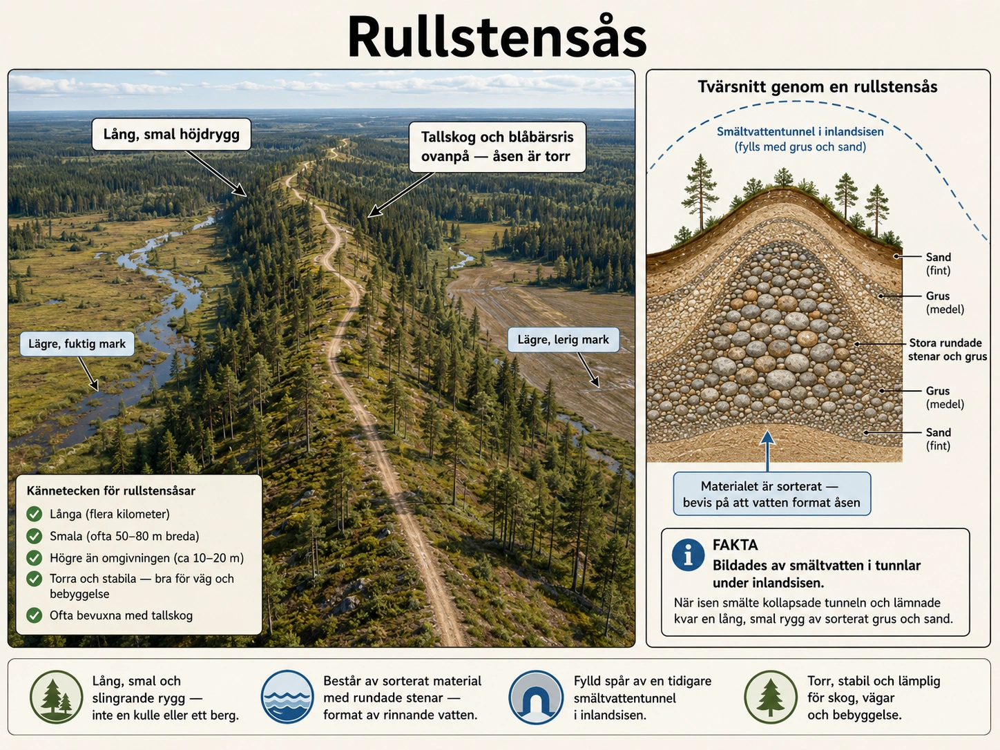
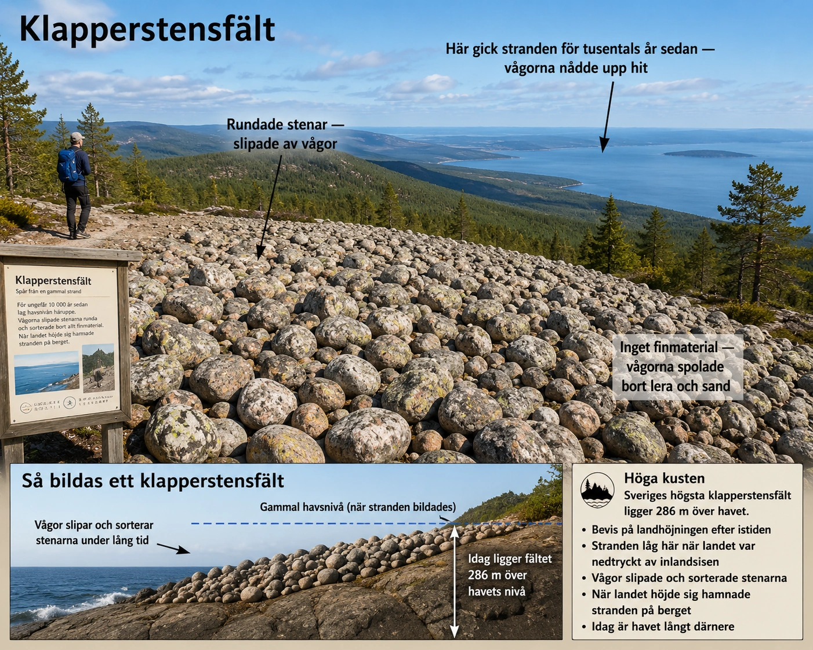
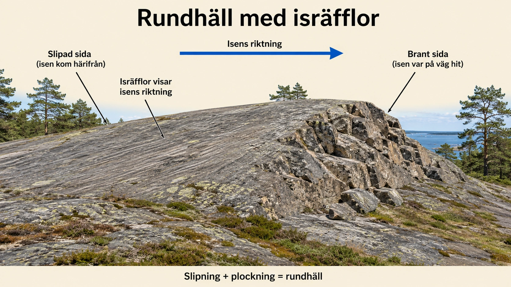
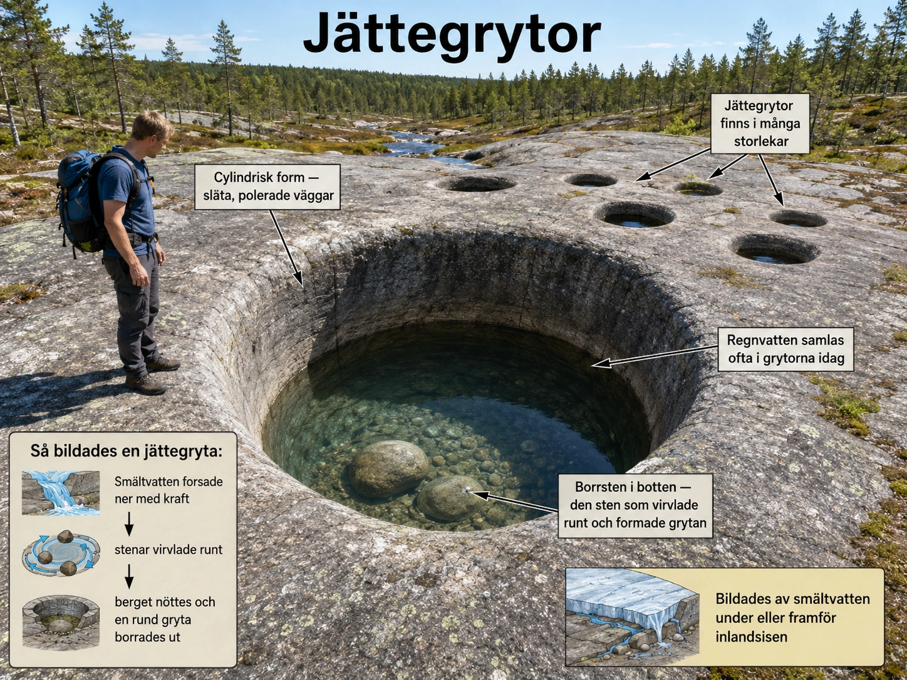
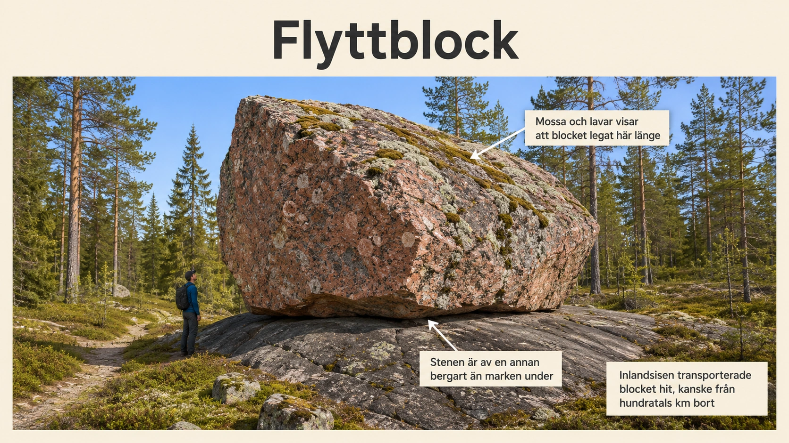
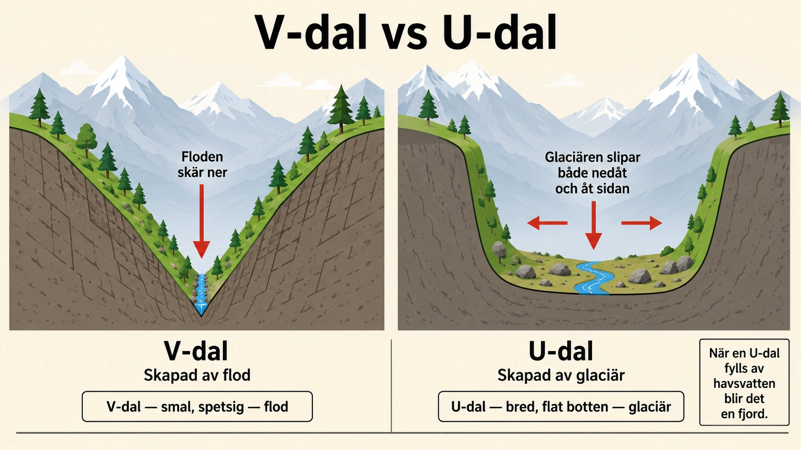

Ett geologiskt arkiv under fötterna
Under den senaste istiden täcktes stora delar av Norden av en mäktig inlandsis. På vissa platser var isen flera kilometer tjock. Isen låg inte stilla, utan rörde sig långsamt över landskapet. När den rörde sig slipade, bröt loss, transporterade och avsatte den material. När klimatet blev varmare började isen smälta. Då forsade enorma mängder smältvatten fram under, i och framför isen.
Därför finns det fortfarande många spår i landskapet efter istiden. En del spår visar hur isen rörde sig, andra visar hur smältvattnet forsade fram, och några visar hur havet bearbetade landskapet efter att isen försvunnit. Dessa spår kallas ibland för glaciala landformer eller lämningar efter istiden.
Exempel på sådana lämningar är rullstensåsar, klapperstensfält, rundhällar, isräfflor, jättegrytor, flyttblock, U-dalar och V-dalar. Tillsammans berättar de en geologisk historia om is, vatten, vågor, vittring och erosion. När man förstår dem kan man läsa landskapet som en historiebok.
Rullstensås — en lång rygg av sorterat material
En rullstensås är en lång, smal och ofta slingrande höjdrygg av grus, sand och rundade stenar. Den bildades när smältvatten forsade fram i tunnlar under inlandsisen. Vattnet hade hög hastighet och kunde därför transportera stora mängder material. När vattnets hastighet minskade avsattes sten, grus och sand i tunneln.
När isen senare smälte bort stod materialet kvar som en lång rygg i landskapet. Man kan säga att en rullstensås är ett slags avtryck av en gammal istunnel. Där det förr fanns en tunnel med forsande vatten finns det idag en lång ås av sten och grus.

Det viktiga med rullstensåsar är att materialet är sorterat. Det betyder att olika kornstorlekar har lagts på olika platser. Större stenar hamnade där vattenströmmen var starkast, medan finare sand och grus kunde hamna längre ut mot sidorna. Detta skiljer rullstensåsar från morän, som är osorterat material direkt från isen.
Stenarna i en rullstensås är ofta rundade. Det beror på att de har rullat, slagits mot varandra och slipats av rinnande vatten. Det är alltså inte bara isen som format materialet, utan också smältvattnet.
Rullstensåsar har ofta haft stor betydelse för människor. Eftersom de består av sand och grus är de torra, stabila och lätta att färdas på. Därför har många gamla vägar och samhällen byggts längs åsar. De fungerar också ofta som viktiga grundvattenmagasin, eftersom vatten kan rinna genom sanden och gruset och renas naturligt på vägen ner.
Viktiga begrepp
rullstensås, smältvatten, istunnel, sorterat material, rundade stenar, avlagring, grundvattenmagasin
Klapperstensfält — gamla stränder högt över havet
Ett klapperstensfält består av rundade stenar som ligger tätt tillsammans, ofta nästan helt utan jord, sand eller växtlighet mellan stenarna. Stenarna har slipats runda av vågor som under lång tid kastat dem mot varandra. De finare materialen, som lera, sand och smågrus, har spolats bort av vågorna.

Klapperstensfält bildades ofta vid gamla stränder. Det som gör dem extra intressanta i Sverige är att många klapperstensfält idag ligger långt ovanför dagens havsnivå. Det beror på landhöjningen.
Under istiden trycktes jordskorpan ner av den tunga inlandsisen. När isen smälte bort försvann tyngden, och landet började långsamt höja sig igen. Därför kan gamla stränder idag ligga högt upp på bergssidor. I områden som Höga kusten är detta mycket tydligt — där finns klapperstensfält flera hundra meter över dagens hav, som visar var havsytan låg tidigare.
Klapperstensfält är alltså spår efter två processer i tur och ordning. Först behövdes vågor som kunde slipa och sortera stenarna. Sedan behövdes landhöjningen som lyfte den gamla stranden upp från havet. Därför är klapperstensfält ett mycket tydligt bevis på att landskapet förändrats efter istiden.
Ett klapperstensfält ska inte förväxlas med morän. Morän är en blandning av block, sten, grus, sand och lera som isen lämnat direkt efter sig. Klapperstensfält är däremot tydligt vågsorterade och består mest av rundade stenar — finmaterialet är borta.
Viktiga begrepp
klapperstensfält, gammal strandlinje, landhöjning, vågerosion, sortering, rundade stenar, finmaterial
Rundhäll — när isen slipade berget
En rundhäll är en berghäll som har formats av inlandsisens rörelse. Den ena sidan är ofta mjukt rundad och slipad, medan den andra sidan kan vara brantare och mer ojämn.
När inlandsisen rörde sig över berget fungerade den som ett jättelikt sandpapper. I isens botten fanns sten, grus och sand infruset. När isen gled över berget slipade materialet bergytan. Detta kallas abrasion, alltså nötning. På den sida där isen först kom in över berget (stötsidan) blev ytan ofta jämn, slät och rundad.

På baksidan av hällen (läsidan) kunde isen istället bryta loss bitar av berget. Vatten kunde tränga ner i sprickor, frysa och expandera. När vatten fryser ökar det i volym, vilket kan pressa isär sprickor i berget. Detta kallas frostvittring. I samband med isens rörelse kunde delar av berget sedan plockas loss — en process som kallas plockning. Resultatet blev en brantare och ojämnare läsida.
Rundhällar visar därför både nötning och lossbrytning samtidigt. Den släta sidan berättar om isens slipande kraft, medan den brantare sidan berättar om hur berget kunde spricka, vittra och brytas loss. Den enskilda hällen är som en kompass av sten — den visar i vilken riktning isen rörde sig.
Rundhällar är vanliga i Sverige, särskilt där berggrunden ligger nära ytan, till exempel längs kuster och i skärgårdar. De kan ibland se ut som mjuka badklippor. Men deras form är inte slumpmässig — den visar i vilken riktning inlandsisen rörde sig.
Viktiga begrepp
rundhäll, abrasion, frostvittring, stötsida, läsida, isrörelse, slipning, plockning
Isräfflor — repor som visar isens riktning
Isräfflor är långa, smala repor i berghällar. De bildades när stenar och grus som satt fastfrusna i inlandsisens undersida skrapade mot berggrunden. När isen rörde sig framåt drogs stenarna över berget och rispade in linjer i ytan.
Isräfflor är mycket viktiga för geologer eftersom de visar vilken riktning isen rörde sig. Om man hittar många isräfflor i samma område kan man rekonstruera hur inlandsisen bredde ut sig och drog sig tillbaka. På så sätt fungerar de som en karta över isens rörelse.
Ibland kan det finnas isräfflor i olika riktningar på samma häll. Det betyder att isen kan ha rört sig i olika riktningar under olika delar av istiden. De äldsta räfflorna kan ibland ha slipats bort av senare isrörelser, men ibland finns flera generationer av räfflor kvar. Då kan man läsa istidens olika faser direkt ur berget.
Isräfflor är ett exempel på glacial erosion, alltså erosion orsakad av is. De är ofta små och kan vara svåra att se, men de är viktiga spår eftersom de berättar exakt hur isen rörde sig.
Viktiga begrepp
isräfflor, glacial erosion, isrörelse, abrasion, berggrund, räfflor, slipning
Jättegrytor — naturliga borrhål i berget
Jättegrytor är runda, ofta cylindriska hål i berghällar. De kan vara små som hinkar eller så stora att en människa får plats i dem. De bildades när vatten forsade fram med mycket hög hastighet och fick stenar att virvla runt på samma plats. Stenarna fungerade som en naturlig borr som sakta nötte sig ner i berget.

Många jättegrytor bildades i samband med inlandsisens avsmältning. När isen smälte rann stora mängder smältvatten fram under starkt tryck. Vattnet kunde störta ner genom sprickor eller hål i isen och träffa berget med enorm kraft. Där kunde virvlar uppstå. Om stenar fastnade i virveln kunde de börja rotera och nöta berget.
Två viktiga processer i jättegrytor
Abrasion betyder nötning. I jättegrytor sker abrasion när stenar, grus och sand gnids mot berget och sliter bort små partiklar från bergytan. Under lång tid kan denna nötning skapa djupa, släta och runda hål.
Kavitation kan också bidra till erosion i kraftigt strömmande vatten. Kavitation uppstår när trycket i snabbt strömmande vatten förändras så kraftigt att små gas- eller ångbubblor bildas och sedan kollapsar. När bubblorna kollapsar skapar de små stötar mot bergytan. Effekten är särskilt stark i forsande vatten, vattenfall och trånga passager där vattnet rör sig snabbt. I jättegrytor kan kavitation hjälpa till att försvaga och nöta bergytan, medan de virvlande stenarna står för den tydliga borrningen.
I botten av en jättegryta kan man ibland hitta en eller flera borrstenar. Det är rundade stenar som har virvlat runt och slipat ut hålet. Borrstenen är ett tydligt bevis på hur grytan bildades — utan stenarna hade hålet aldrig kunnat skapas.
Jättegrytor visar alltså hur vatten kan vara en mycket stark erosionskraft, särskilt när det kombineras med stenar, högt tryck och lång tid. De är ett av de tydligaste bevisen på smältvattnets enorma kraft när inlandsisen drog sig tillbaka.
Viktiga begrepp
jättegryta, borrsten, smältvatten, virvel, abrasion, kavitation, erosion, cylindrisk form
Flyttblock — stora stenar som transporterats av isen
Ett flyttblock är ett stort stenblock som har transporterats av inlandsisen och sedan lämnats kvar när isen smälte. Flyttblock kan ligga ensamma ute på åkrar, i skogar eller på berg där de egentligen inte verkar höra hemma.

Många flyttblock kommer från en annan plats än där de ligger idag. När inlandsisen rörde sig kunde den bryta loss stenblock från berggrunden och föra dem långa sträckor. När isen smälte tappades blocken på marken — där de blivit liggande ända sedan dess.
Flyttblock kan ibland avslöja hur isen rörde sig. Om ett block består av en bergart som bara finns på en viss plats, kan geologer jämföra blockets bergart med berggrunden och förstå varifrån isen transporterade det. På så sätt kan flyttblock fungera som spår av isens rörelsevägar.
Flyttblock visar också isens enorma kraft. Vanligt rinnande vatten kan inte flytta stenblock som väger flera ton, men inlandsisen kunde bära dem med sig infrusna i ismassan eller skjuta dem framför sig. Ett flyttblock ska inte förväxlas med en vanlig sten som vittrat loss på platsen — det som gör ett flyttblock speciellt är just att det har transporterats av isen, ofta hundratals kilometer.
Viktiga begrepp
flyttblock, transport, inlandsis, bergart, isrörelse, avsmältning, glacial transport
V-dal — dal formad av rinnande vatten
En V-dal är en dal med branta sidor och smal botten, formad ungefär som bokstaven V. Den bildas framför allt av rinnande vatten, till exempel en flod eller bäck som skär sig ner i landskapet.
När vatten rinner nedför en sluttning eroderar det marken. I början kan en liten bäck skapa en fåra. Med tiden blir fåran djupare. Vattnet transporterar bort material och skär sig nedåt. Därför blir dalen ofta smal i botten och brant på sidorna.
V-dalar är vanliga i bergsområden där floder har stor fallhöjd och kan erodera kraftigt nedåt. De är alltså inte i första hand skapade av is, utan av floderosion. Men de är viktiga att jämföra med U-dalar, eftersom skillnaden visar hur olika erosionskrafter formar landskapet på olika sätt. I en V-dal är det vattnets nedskärande kraft som dominerar — floden gröper ur en smal fåra. Sidorna rasar och vittrar efter hand, men dalens huvudform förblir V-formad.
Viktiga begrepp
V-dal, floderosion, nedskärning, erosion, transport, rinnande vatten
U-dal — dal formad av glaciär
En U-dal är en bred dal med relativt branta sidor och en bredare, flackare botten. Den är formad som bokstaven U. U-dalar bildas när en glaciär rör sig genom en tidigare dal och slipar och gröper ur den.

Många U-dalar började faktiskt som V-dalar. Först skapade rinnande vatten en smal dal. Senare, under istiden, fylldes dalen av glaciäris. När glaciären rörde sig framåt fungerade den som ett enormt verktyg. Isen slipade dalens sidor och botten med hjälp av sten och grus infruset i isen — alltså abrasion. Glaciären kunde också bryta loss block från berggrunden, särskilt där sprickor redan fanns.
Eftersom en glaciär är mycket bredare och tyngre än en flod, eroderar den inte bara i en smal fåra. Den bearbetar hela dalbotten och dalens sidor. Därför blir dalen bredare och får sin karakteristiska U-form.
U-dalar är vanliga i fjällområden, till exempel i Norge, Alperna och andra områden där glaciärer har funnits. Om en U-dal senare fylls med havsvatten kan den bilda en fjord. Många norska fjordar är alltså gamla glaciärdalar som havet senare flyttat in i.
Skillnaden mellan V-dal och U-dal är därför ett bra exempel på hur olika krafter formar landskapet på olika sätt: floden skär smalt och djupt, glaciären slipar brett och tungt.
Viktiga begrepp
U-dal, glaciär, glacial erosion, abrasion, plockning, dalbotten, fjord
Sammanfattande jämförelse
De olika landformerna har olika orsaker och berättar olika delar av istidens historia. Här är en översikt:
| Landform | Bildades främst av | Viktig process | Vad visar den? |
|---|---|---|---|
| Rullstensås | Smältvatten under isen | Avlagring och sortering | Var smältvattentunnlar gick |
| Klapperstensfält | Vågor vid gamla stränder | Vågerosion och sortering | Landhöjning efter istiden |
| Rundhäll | Inlandsis | Abrasion och plockning | Isens rörelseriktning |
| Isräfflor | Inlandsis med sten i botten | Abrasion | Vilken riktning isen rörde sig |
| Jättegrytor | Forsande smältvatten | Abrasion och kavitation | Kraftigt smältvatten under/vid isen |
| Flyttblock | Inlandsis | Transport | Isens styrka och rörelseväg |
| V-dal | Rinnande vatten | Floderosion | Hur vatten skär ner i landskapet |
| U-dal | Glaciär | Glacial erosion | Hur glaciärer breddar och fördjupar dalar |
Orsakskedjan — från istid till dagens landskap
Allt detta hör ihop som en kedja av händelser:
- Inlandsisen täckte Sverige.
- Isen rörde sig över landskapet.
- Berg slipades, räfflades och bröts loss.
- Smältvatten forsade under och framför isen.
- Material sorterades och avsattes i åsar.
- Vågor bearbetade gamla stränder när landet låg lägre.
- Landet höjde sig efter istiden.
- Gamla stränder, block, åsar och slipade berghällar finns kvar som spår i dagens landskap.
Att läsa landskapet som en historiebok
Lämningarna efter istiden är som ett geologiskt arkiv. De gör det möjligt att läsa landskapet som en historiebok. En rullstensås visar var smältvatten forsade i tunnlar under isen. Ett klapperstensfält visar var havets strand låg innan landhöjningen lyfte området. En rundhäll och isräfflor visar hur isen rörde sig och slipade berget. Jättegrytor visar kraften i virvlande smältvatten, där abrasion och ibland kavitation hjälpte till att borra ner i berget. Flyttblock visar att isen kunde transportera enorma stenmassor. V-dalar och U-dalar visar skillnaden mellan rinnande vatten och glaciärer som erosionskrafter.
När man förstår dessa former ser man att Sveriges landskap inte är stillastående. Det är format av mycket långsamma men starka processer: is, vatten, vågor, vittring, erosion, transport och avlagring. Dessa processer har tillsammans skapat det landskap vi lever i idag.
Nästa gång du går genom en svensk skog, kör förbi en lång ås längs vägen, vandrar uppför ett berg vid Höga kusten eller hittar en gryta i berget — då ser du inte bara natur. Du ser direkta avtryck av en värld som var radikalt annorlunda för bara 11 000 år sedan. Hela Sverige är skrivet i sten, jord och vatten — om man bara lär sig läsa språket.